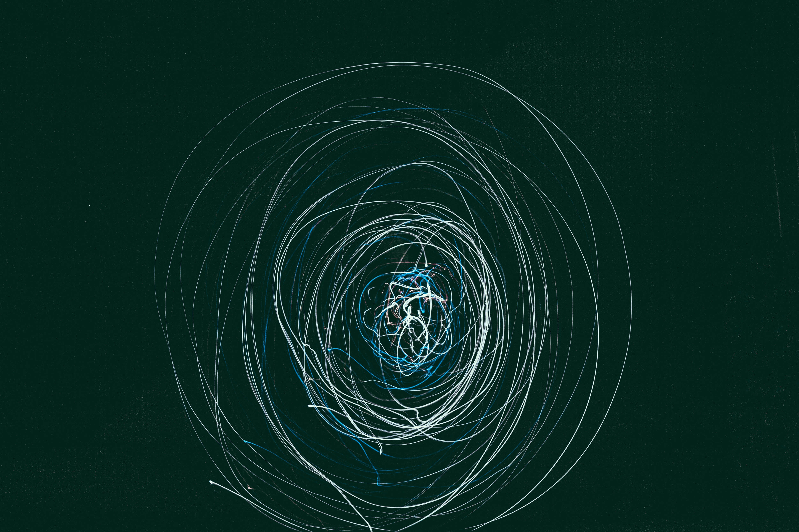

The electron is a subatomic particle, symbol whose electric charge is negative one elementary charge. Electrons belong to the first generation of the lepton particle family, and are generally thought to be elementary particles because they have no known components or substructure. The electron has a mass that is approximately 1/1836 that of the proton.
Quantum mechanical properties of the electron include an intrinsic angular momentum (spin) of a half-integer value, expressed in units of the reduced Planck constant, ħ. As it is a fermion, no two electrons can occupy the same quantum state, in accordance with the Pauli exclusion principle. Like all elementary particles, electrons exhibit properties of both particles and waves: they can collide with other particles and can be diffracted like light. The wave properties of electrons are easier to observe with experiments than those of other particles like neutrons and protons because electrons have a lower mass and hence a longer de Broglie wavelength for a given energy.